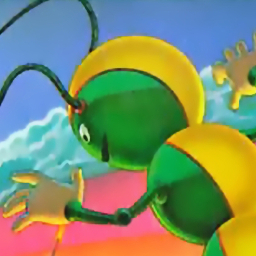

 Centipede
Details
 |
|
| Spielzeit | Nicht gespielt |
| Letzte Aktivität | Nie |
| Hinzugefügt | 05.10.2022 23:15:48 |
| Modifiziert | 12.12.2022 1:32:51 |
| Fertigstellungsstatus | Not Played |
| Bibliothek | Playnite |
| Quelle | |
| Plattform | Game Boy Color |
| Veröffentlichungsdatum | 1998 |
| Community Bewertungen | 60 |
| Kritiker Punkte | 80 |
| Benutzerwertung | |
| Genre | Arcade Shooter |
| Entwickler | Leaping Lizard |
| Verleger | Atari Hasbro Interactive MacSoft Games Sony Computer Entertainment America |
| Eigenschaft | Multiplayer Single Player Split Screen |
| Links | Wikia Wikipedia |
| Tag | 1980s 2D Abstract Action Arcade Colorful Combat Controller Co-Op Local Co-Op Minimalist Multiplayer Psychedelic Retro Score Attack Shoot 'Em Up Shooter Single Player Top-Down Top-Down Shooter |
Beschreibung
Enter the world of the Wee People and do your best to save them from the QueenPede, who will stop at nothing to destroy this peaceful race of humanoids. In this remake of the classic Atari game, players take the role of Wally, the village's humble bean counter, as he is quickly recruited to man the village bug shooter and sent off to save the colony from the ruthless QueenPede and her destructive subjects -- the spiders, scorpions, and fleas -- as she sets out to conquer the peaceful wee people. Work your way through all-new 3D worlds with new weapons and skills. And if you're really good, you might just discover the original Centipede.